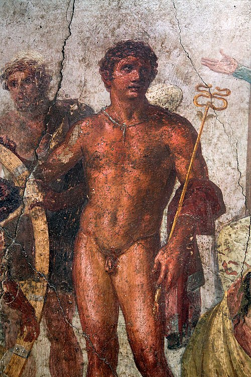

Герме́с (др.-греч. Ἑρμῆς), устар. Э́рмий, — в древнегреческой мифологии бог торговли и счастливого случая, хитрости и воровства, юношества и красноречия. Покровитель глашатаев, послов, пастухов, путников. Посланник богов и проводник душ умерших (отсюда прозвище Психопомп — «проводник душ») в подземное царство Аида. Согласно многочисленным античным мифам — сын плеяды Майи и Зевса. К наиболее известным мифам о Гермесе относят кражу коров у Аполлона, совершённую юным богом в младенчестве, а также усыпление и убийство Аргуса, который имел множество глаз и никогда полностью не засыпал. В Древнем Риме в V веке до н. э. был принят культ бога торговли Меркурия (от лат. merx — товар и лат. merco — торговать). Впоследствии Меркурия отождествили с древнегреческим богом Гермесом. Мифы классического периода истории Эллады о Гермесе экстраполировали на Меркурия. Их образы сблизились и переплелись настолько тесно, что стали неотличимыми. По другой версии, Меркурий был изначально заимствованным из древнегреческой мифологии Гермесом. Бог-посредник, каковым являлся Гермес, идеально подходил на роль бога-покровителя обмена и торговли. С течением времени первоначальный образ Меркурия — покровителя торговли в Древнем Риме усложнился, он приобрёл характерные для Гермеса черты — проводника душ в мир мёртвых, вестника и прислужника богов, покровителя искусств и ремёсел, знатока магии и астрологии. В императорскую эпоху образы греческого Гермеса и римского Меркурия слились настолько, что стали неотличимыми.
«Гермес Пропилей (Привратный)». Герма, приписываемая Алкамену.
Согласно древнегреческим мифам, Гермес был сыном Зевса и плеяды Майи, дочери титана Атланта и океаниды Плейоны. Верховный бог в тайне от Геры навещал нимфу в одной из пещер (по одной, более распространённой версии, горы Киллены в Аркадии, по другой — Керикиона в Беотии в области города Танагр), где и родился Гермес. По месту рождения имел эпитет «Килления». Первое воровство совершил ещё в младенчестве. На четвёртый день после рождения юный бог вылез из пелёнок. Около пещеры на горе Хелидорея он увидел черепаху. Из её панциря Гермес сделал лиру, использовав в качестве струн овечьи кишки. Затем младенец, вновь покинув пещеру, отправился в Пиерию и угнал пятьдесят коров из стада, которое было поручено пасти Аполлону. Чтобы животных не нашли по следам, он привязал к их ногам ветки и пригнал в Пилос, где укрыл в пещере. Там мальчик развёл костёр, убил двух коров из стада, после чего принёс жертвы богам и поел сам. В дороге с ним случилось приключение. По пути ему встретился пастух царя города Пилоса Нелея по имени Батт. Молодой бог пообещал или подарил старику одну из коров за его молчание. Отогнав стадо, Гермес изменил свой вид и голос, после чего вернулся к Батту. Выдав себя за хозяина похищенных коров и пообещав награду, он выведал у болтливого пастуха всё, что тот видел. Тогда Гермес рассердился и превратил Батта в камень. Аполлон, обнаружив пропажу, начал поиски. Расспросив местных жителей, один из которых видел мальчика с хлыстом, угоняющего коров, а также благодаря знакомому не понаслышке Аполлону искусству прорицания он узнал о личности похитителя. Придя в пещеру, где лежал в колыбели Гермес, Аполлон потребовал вернуть ему коров. Мальчик стал отпираться, указывая на свой возраст. Тогда Аполлон взял Гермеса в пелёнках и понёс на Олимп к их общему отцу Зевсу. Ситуация позабавила верховного бога. По указанию отца Гермес был вынужден отвести Аполлона к месту, куда он загнал и спрятал коров. По пути Гермес начал играть на сконструированной им из панциря черепахи лире. Игра на музыкальном инструменте настолько поразила Аполлона, что в обмен на неё он отдал Гермесу своё стадо. Тотчас же Гермес создал свирель. Этот музыкальный инструмент, как и лира, понравился Аполлону. Взамен на свирель Аполлон предложил Гермесу свой волшебный посох. Расстались оба бога друзьями, дав клятвы друг другу о вечной дружбе. Также Гермес пообещал Аполлону, что больше никогда не украдёт ничего из его имущества. Гермес решил проверить силу подарка. Он поставил жезл между двумя борющимися змеями. Те тотчас же прекратили противоборство и обвили палку. Гермесу эта картина так понравилась, что он их обездвижил. Впоследствии жезл кадуцей стал неотъемлемым атрибутом бога.

Гермес на античной фреске из Помпей.